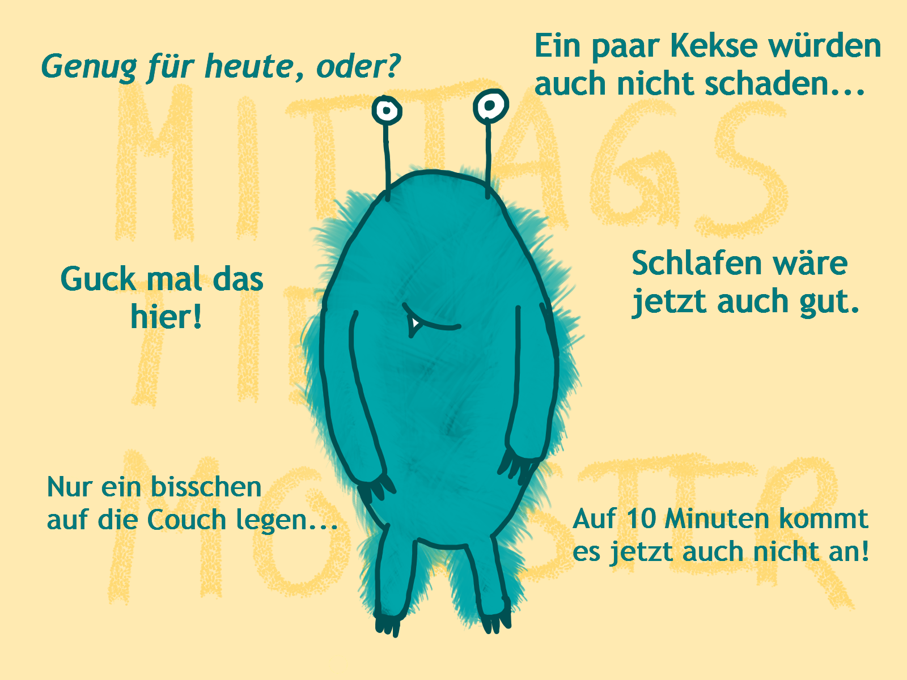

Neuste Blogbeiträge:

Das Mittagstief-Monster
04.04.2021
Kennt ihr das Mittagstief-Monster? Hier erfahrt ihr, wie ihr mit dem Mittagstief umgeht und es sinnvoll für euch nutzen könnt.

Produktive Pausen - geht das?
21.03.2021
Pausen und Produktivität - passt nicht zusammen? Ganz im Gegenteil! Pausen können dafür sorgen, dass man mehr Energie hat, kreativer und motivierter ist.

Prüfungsphase leicht(er) gemacht
07.03.2021
Wie ich mich auf Klausuren vorbereite, welche Lernmethoden mir helfen und wie man sich nicht in der Prüfungsphase verrückt machen lässt.
Annimationen:
Hungrige Schildkröte
Bearly awake